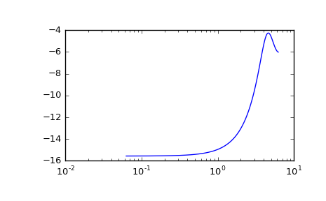

scipy.signal.dlti.bode¶
-
dlti.bode(w=None, n=100)[source]¶ Calculate Bode magnitude and phase data of a discrete-time system.
Returns a 3-tuple containing arrays of frequencies [rad/s], magnitude [dB] and phase [deg]. See
dbodefor details.Examples
>>> from scipy import signal >>> import matplotlib.pyplot as plt
Transfer function: H(z) = 1 / (z^2 + 2z + 3) with sampling time 0.5s
>>> sys = signal.TransferFunction([1], [1, 2, 3], dt=0.5)
Equivalent: signal.dbode(sys)
>>> w, mag, phase = sys.bode()
>>> plt.figure() >>> plt.semilogx(w, mag) # Bode magnitude plot >>> plt.figure() >>> plt.semilogx(w, phase) # Bode phase plot >>> plt.show()
